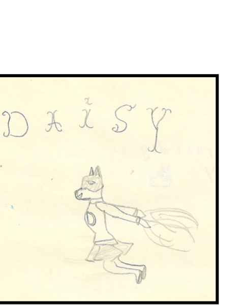
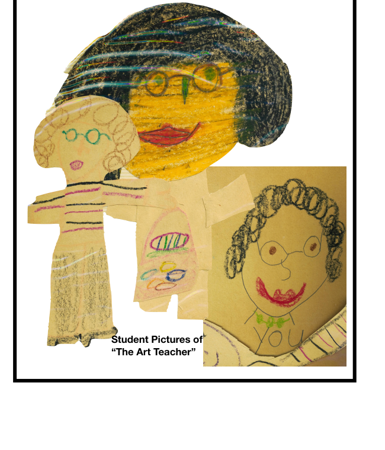
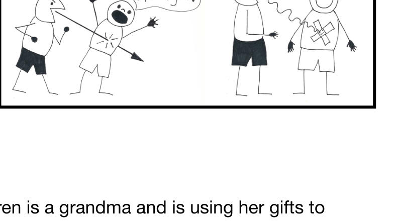
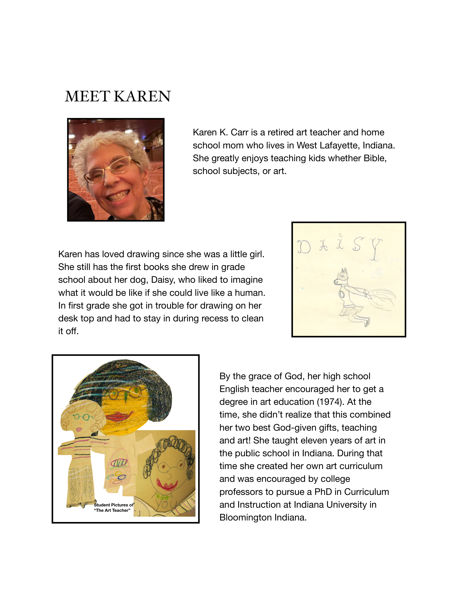

First handmade books
Daisy the dog appeared in one of Karen's earliest childhood stories.
About Karen Carr
Karen's source pages made it very clear that her biography belongs on the site not as prestige, but as evidence that teaching, art, and motherhood have always belonged together in her work.
Karen loved drawing as a girl, taught art in Indiana public schools, and later used those same gifts while homeschooling her three boys. Her planning notes call that season “the best teaching job.”
Much of that teaching involved drawing so that children could see what a wise or foolish choice looked like, or understand a truth that would have felt too abstract in words alone.
Now, as a grandmother, she is still doing that work. The medium is still pictures. The purpose is still wisdom.

Daisy the dog appeared in one of Karen's earliest childhood stories.

Students drew the teacher who taught them to look carefully and make things with their hands.

Home, homeschool groups, and church classes all became places where Karen drew to teach.
How The Wise Child Book Began
This story from Karen's notes deserves to stay visible because it explains why the site should feel personal and domestic rather than corporate. The work started in family life, with Scripture, drawings, and repeated questions from a child.
Read the preface